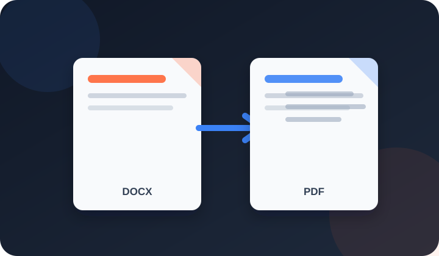

Turn DOCX or TXT files into PDFs in seconds, with your page size, fonts, headers and page numbers. Everything runs in your browser, so files stay with you.
Free · No sign-up · No upload · No watermark

PDFdukan's Word to PDF converter turns DOCX and TXT files into PDFs for free, in a few seconds. It reads your Word file inside the browser and lays each page out with the file's own page size, margins, fonts, line spacing, headers, footers and page numbers.
You check the PDF in a preview before downloading, and nothing is uploaded to a server or saved by us.
Three steps take a Word file to a PDF you can send:
Each page follows the settings saved in your Word file:
Letter, A4, Legal or custom sizes, landscape pages and margins match the document settings.
Bold, colors, headings, bullets and Urdu or Arabic right-to-left text stay; missing fonts get a close match.
Table borders, shaded cells, pictures and logos stay in place, and pages never cut through a picture.
Header and footer text and page numbers print on every page, as set in the file.
These limits apply to each conversion run:
| Item | Details |
|---|---|
| Input | DOCX (Word 2007 and later) or TXT |
| Files | Up to 10 per run, 50 MB each |
| Output | One PDF per file, a ZIP, or one combined PDF |
| Devices | Chrome, Edge, Firefox or Safari, on computers and phones |
Common jobs include:
Use common fonts like Calibri, Arial or Times New Roman; a rare font missing on your device is swapped and lines can move. Check page breaks in the preview, and click Make the file smaller before emailing a long PDF.
No. PDFdukan converts the file inside your browser. Only open-source helper scripts such as docx-preview and pdf-lib, plus fonts, load from a public CDN; your document never leaves your device.
PDFdukan can't open old .doc, ODT or RTF files, password-protected files or macros; save them as DOCX in Word first. Text boxes, charts and Word table styles can look slightly different. Text in the PDF can be searched, but pages are stored as images. To shrink the PDF, use Compress PDF.
Yes. PDFdukan converts DOCX to PDF free, with no sign-up, no watermark and no daily cap.
Not directly. Open it in Word, choose File > Save As > Word Document (.docx), then add the new file here.
Yes. Urdu and Arabic paragraphs stay right to left, and Jameel Noori Nastaleeq text keeps a Nastaleeq look.
Yes. Add up to 10 files, then click Combine into one PDF; the files join in the order shown.
Your device doesn't have that font, so a close match with the same size is used and lines can move slightly.
Edit the Word file and convert again. To turn a PDF into Word, use PDF to Word.
Connect Google Drive to save selected outputs to your own Drive storage. Review the destination before uploading sensitive documents.
No account? Sign Up free